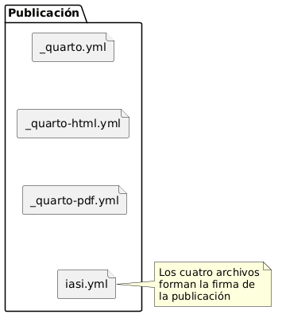
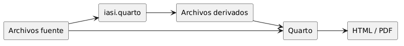
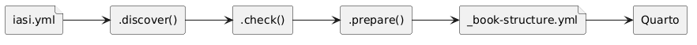
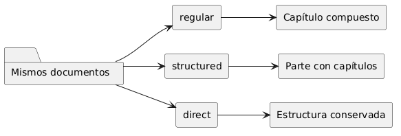
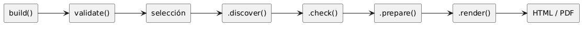
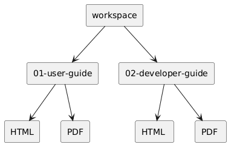

3 Fundamentos
3.1 La publicación IASI Quarto
Una publicación IASI Quarto es un proyecto Quarto cuya estructura, configuración y proceso de construcción siguen las convenciones definidas por iasi.quarto.
No es un tipo diferente de documento. Sigue siendo una publicación Quarto y puede utilizar sus formatos, extensiones y mecanismos habituales. iasi.quarto añade una capa de organización y automatización sobre ese proyecto:
- reconoce publicaciones;
- interpreta su estructura;
- comprueba su coherencia;
- genera los artefactos derivados;
- coordina su construcción.
La publicación continúa perteneciendo a Quarto. iasi.quarto no sustituye su motor, sino que organiza todo lo que ocurre antes de invocarlo.
3.1.1 La firma de una publicación
Una carpeta se reconoce como publicación IASI Quarto cuando contiene estos cuatro archivos:
_quarto.yml
_quarto-html.yml
_quarto-pdf.yml
iasi.ymlLos cuatro forman la firma de la publicación.
_quarto.yml contiene la configuración común del proyecto Quarto.
_quarto-html.yml contiene la configuración específica del perfil HTML.
_quarto-pdf.yml contiene la configuración específica del perfil PDF.
iasi.yml declara cómo debe interpretar y preparar la publicación iasi.quarto.
La coexistencia de los cuatro archivos es intencionada. La presencia aislada de _quarto.yml únicamente identifica un proyecto Quarto. La presencia aislada de iasi.yml tampoco es suficiente. Solo la firma completa identifica una publicación IASI Quarto.
Una estructura mínima puede ser:
my-publication/
├── _quarto.yml
├── _quarto-html.yml
├── _quarto-pdf.yml
├── iasi.yml
├── index.qmd
└── chapters/La firma permite reconocer el proyecto sin analizar todavía toda su configuración ni recorrer su contenido. El reconocimiento es deliberadamente superficial: primero se determina qué existe; después se estudia qué contiene.
3.1.2 Una publicación no es necesariamente un libro
iasi.quarto utiliza el término publicación para referirse a la unidad que puede comprobarse, prepararse y construirse.
Actualmente, el caso principal es un libro Quarto:
project:
type: bookSin embargo, la publicación y el tipo de proyecto son conceptos diferentes.
La publicación es la unidad gestionada por iasi.quarto.
El tipo indica cómo entiende Quarto ese proyecto:
book
website
manuscript
articleEsta separación evita incorporar en la arquitectura una equivalencia innecesaria:
publicación ≠ libroUn libro es un tipo posible de publicación. La publicación es el concepto más general.
3.1.3 Publicación individual
Cuando la carpeta indicada contiene directamente la firma completa, se considera una publicación individual.
Por ejemplo:
user-guide/
├── _quarto.yml
├── _quarto-html.yml
├── _quarto-pdf.yml
├── iasi.yml
├── index.qmd
└── chapters/En este caso, la carpeta user-guide/ es la raíz de la publicación.
La construcción se realiza desde esa raíz y todos los archivos de configuración, contenido y salida se interpretan en relación con ella.
validate("user-guide")También puede validarse desde el propio directorio:
validate()3.1.4 Multiproyecto
Una carpeta puede actuar como contenedor de varias publicaciones independientes.
docs/
├── user-guide/
│ ├── _quarto.yml
│ ├── _quarto-html.yml
│ ├── _quarto-pdf.yml
│ ├── iasi.yml
│ ├── index.qmd
│ └── chapters/
│
└── developer-guide/
├── _quarto.yml
├── _quarto-html.yml
├── _quarto-pdf.yml
├── iasi.yml
├── index.qmd
└── chapters/La carpeta docs/ no es una publicación. Es un multiproyecto que contiene dos publicaciones:
user-guide
developer-guideCada una conserva su propia configuración, estrategia, contenido y perfiles de salida.
El multiproyecto permite construirlas conjuntamente sin convertirlas en partes de un único libro.
validate("docs")La validación reconoce el contenedor y localiza las publicaciones que contiene.
La raíz del multiproyecto no necesita disponer de su propio iasi.yml. Su función es agrupar publicaciones completas, no comportarse como una publicación adicional.
3.1.5 La publicación actual tiene prioridad
Cuando la carpeta indicada contiene la firma completa, se interpreta como una publicación individual aunque existan otras firmas en directorios descendientes.
publication/
├── _quarto.yml
├── _quarto-html.yml
├── _quarto-pdf.yml
├── iasi.yml
├── index.qmd
├── chapters/
└── examples/
└── sample-book/
├── _quarto.yml
├── _quarto-html.yml
├── _quarto-pdf.yml
└── iasi.ymlEn este caso, publication/ es la publicación actual. La publicación situada bajo examples/ no se incorpora automáticamente al mismo plan de construcción.
Esta regla evita que ejemplos, plantillas, pruebas o proyectos auxiliares se confundan con publicaciones hermanas.
El reconocimiento sigue este orden:
- comprobar si la carpeta actual contiene la firma completa;
- si la contiene, tratarla como una publicación individual;
- si no la contiene, buscar publicaciones completas en sus descendientes;
- si se encuentran, tratar la carpeta como multiproyecto;
- si no se encuentra ninguna, concluir que no es un proyecto IASI Quarto.
3.1.6 Publicación y contenido
La raíz de la publicación no obliga a utilizar un directorio llamado chapters.
El directorio de contenido se declara en iasi.yml:
publication:
content-dir: chaptersPodría utilizarse otro nombre:
publication:
content-dir: contentY la estructura correspondiente sería:
my-publication/
├── _quarto.yml
├── _quarto-html.yml
├── _quarto-pdf.yml
├── iasi.yml
├── index.qmd
└── content/La publicación es la raíz completa del proyecto. El directorio de contenido es solo una de sus partes.
Esta distinción permite que una publicación contenga, además del texto principal:
images/
resources/
bibliography/
extensions/
scripts/
outputs/iasi.quarto no redefine toda la estructura de Quarto. Solo necesita conocer dónde se encuentra el contenido que debe organizar.
3.1.7 Archivos fuente y archivos derivados
Dentro de una publicación existen dos clases de archivos.
Los archivos fuente pertenecen al autor:
index.qmd
iasi.yml
_quarto.yml
_quarto-html.yml
_quarto-pdf.yml
chapters/01-intro/01-introduction.qmdLos archivos derivados son generados por iasi.quarto durante la preparación:
_book-structure.yml
chapters/01-intro/index.qmdLa lista exacta depende de la estrategia de publicación.
La diferencia es importante:
- los archivos fuente expresan decisiones editoriales;
- los archivos derivados materializan esas decisiones para Quarto.
Un archivo derivado puede regenerarse. No debe convertirse accidentalmente en la única copia de contenido escrito por el autor.
3.1.8 Reconocer no significa construir
El reconocimiento de una publicación no implica que sea válida ni que pueda construirse.
Una carpeta puede contener la firma completa y, aun así, presentar problemas:
iasi.yml mal formado
estrategia desconocida
directorio de contenido inexistente
index.qmd raíz ausente
estructura incompatible con la estrategiaPor eso validate() responde a una pregunta limitada:
¿Existe aquí una publicación IASI Quarto o un multiproyecto reconocible?
No genera archivos, no modifica el proyecto y no ejecuta Quarto.
validate()La construcción completa corresponde a:
build()Esta separación permite inspeccionar un proyecto antes de intervenir sobre él.
3.1.9 La publicación como unidad de construcción
Una publicación reúne todo lo necesario para ejecutar una construcción independiente:
configuración común
configuración por formato
declaración IASI
contenido
artefactos derivados
salidasEn un multiproyecto, cada publicación mantiene esa independencia.
Esto permite construir:
- todas las publicaciones;
- una publicación concreta;
- todos los formatos;
- un formato determinado.
Por ejemplo:
build(
book = "user-guide",
format = "html"
)La selección pertenece al proceso de construcción. La publicación, por su parte, continúa siendo una unidad completa y autosuficiente.
Esa es la frontera fundamental del modelo:
Una publicación IASI Quarto es una unidad Quarto reconocible, configurable y construible de forma independiente.
3.2 Estructura de un proyecto
Una publicación IASI Quarto sigue siendo un proyecto Quarto.
iasi.quarto no sustituye su estructura ni introduce un contenedor documental propio. Añade una convención mínima que permite descubrir la publicación, comprobarla, preparar sus artefactos derivados y delegar finalmente el renderizado en Quarto.
La estructura mínima de una publicación es:
publication/
├── _quarto.yml
├── _quarto-html.yml
├── _quarto-pdf.yml
└── iasi.ymlLa presencia conjunta de estos cuatro archivos identifica una publicación IASI Quarto.

3.3 Configuración general y configuración por formato
El archivo _quarto.yml contiene la configuración común de Quarto:
project:
type: book
profile:
group:
- [html, pdf]
metadata-files:
- _book-structure.ymlLas configuraciones específicas de cada salida se mantienen separadas:
_quarto-html.yml
configuración de la publicación HTML
_quarto-pdf.yml
configuración de la publicación PDFEsta separación permite que una misma publicación produzca distintos formatos sin mezclar sus decisiones particulares.
Por ejemplo, el HTML puede utilizar una hoja de estilos CSS, mientras que el PDF puede declarar opciones específicas de LaTeX.
3.4 Configuración de iasi.quarto
El archivo iasi.yml describe cómo debe interpretar iasi.quarto el contenido de la publicación.
publication:
strategy: regular
content-dir: chapters
numbered: trueSus valores predeterminados son:
publication:
strategy: regular
content-dir: chapters
numbered: truePor tanto, una publicación puede omitir las propiedades que no necesite modificar.
iasi.yml no contiene configuración de renderizado. Su responsabilidad es describir la organización editorial que iasi.quarto debe descubrir y preparar.
3.5 Directorio de contenido
La propiedad content-dir señala dónde se encuentran los documentos de la publicación.
publication:
content-dir: chaptersCon esta configuración, la estructura habitual es:
publication/
├── chapters/
├── _quarto.yml
├── _quarto-html.yml
├── _quarto-pdf.yml
└── iasi.ymlEl nombre chapters es el valor predeterminado, pero no forma parte rígida del modelo.
También sería válida una publicación como:
publication/
├── content/
├── _quarto.yml
├── _quarto-html.yml
├── _quarto-pdf.yml
└── iasi.ymlsi iasi.yml declara:
publication:
content-dir: content3.6 Documentos de raíz
Los documentos situados en la raíz de la publicación pertenecen directamente al libro.
Por ejemplo:
publication/
├── index.qmd
├── manifesto.qmd
├── principles.qmd
├── licenses.qmd
└── chapters/iasi.quarto conserva estos documentos y los incorpora antes o después del contenido organizado en carpetas, según su posición dentro de la estructura preparada.
El index.qmd de la raíz es siempre un documento del autor.
No debe confundirse con los archivos index.qmd que pueden existir dentro del directorio de contenido.
3.7 Carpetas de contenido
Cada carpeta inmediata de content-dir representa una unidad editorial.
chapters/
├── 01-fundamentals/
├── 02-installation/
└── 03-usage/El significado exacto de cada carpeta depende de la estrategia de publicación.
En una publicación regular, cada carpeta se convierte en un capítulo compuesto.
En una publicación structured, cada carpeta se convierte en una parte que contiene capítulos independientes.
La estructura física puede ser parecida, pero su interpretación editorial es distinta.
3.8 Estructura regular
Una carpeta regular contiene documentos parciales que se ensamblan en un único capítulo.
chapters/
└── 01-fundamentals/
├── front-matter.quarto
├── 00-index.qmd
├── 01-publication.qmd
└── 02-project-structure.qmdEl archivo front-matter.quarto es opcional.
Cuando existe, contiene un front matter Quarto completo:
---
title: "Fundamentals"
title-block-style: none
---iasi.quarto lo copia literalmente al principio del index.qmd generado.
Los documentos .qmd contienen el cuerpo del capítulo:
## La publicación
Contenido de la sección.Durante la preparación, iasi.quarto genera:
chapters/
└── 01-fundamentals/
├── front-matter.quarto
├── 00-index.qmd
├── 01-publication.qmd
├── 02-project-structure.qmd
└── index.qmdEl resultado derivado tiene esta forma:
---
title: "Fundamentals"
title-block-style: none
---
<!-- Generated by iasi.quarto. Do not edit. -->
{{{< include 00-index.qmd >}}}
{{{< include 01-publication.qmd >}}}
{{{< include 02-project-structure.qmd >}}}En esta estrategia:
el autor mantiene los documentos parciales
iasi.quarto mantiene el index.qmd de la carpetaSi front-matter.quarto no existe, el capítulo se genera sin front matter. Quarto podrá mostrar index.html como nombre de navegación, haciendo visible que falta la metadata editorial.
3.9 Estructura structured
En una publicación structured, cada carpeta contiene capítulos independientes.
chapters/
└── 01-fundamentals/
├── index.qmd
├── 01-publication.qmd
└── 02-project-structure.qmdEl index.qmd de la carpeta pertenece al autor y actúa como introducción de la parte.
Los demás documentos son capítulos completos y comienzan normalmente con un encabezado de primer nivel:
# Estructura del proyectoEn esta estrategia, iasi.quarto no genera ni reemplaza el index.qmd de la carpeta.
regular:
iasi.quarto mantiene el index.qmd
structured:
el autor mantiene el index.qmd3.10 Archivos fuente y archivos derivados
Una publicación contiene dos clases de archivos.
Los archivos fuente son mantenidos por el autor:
iasi.yml
_quarto.yml
_quarto-html.yml
_quarto-pdf.yml
front-matter.quarto
*.qmdLos archivos derivados son producidos por iasi.quarto:
_book-structure.yml
index.qmd de las carpetas regularEsta separación es importante.
Los archivos derivados pueden regenerarse en cualquier momento. No deben utilizarse como lugar de edición porque su contenido pertenece al proceso de preparación.

3.11 La estructura preparada
Quarto necesita una relación explícita de los capítulos que forman el libro.
iasi.quarto genera esa relación en:
_book-structure.ymlPor ejemplo:
book:
chapters:
- "index.qmd"
- "chapters/01-fundamentals/index.qmd"
- "chapters/02-installation/index.qmd"El archivo _quarto.yml incorpora esta estructura mediante:
metadata-files:
- _book-structure.ymlDe esta forma, la configuración principal permanece estable mientras la estructura editorial puede regenerarse automáticamente.
3.12 Publicaciones múltiples
Un directorio superior puede contener varias publicaciones independientes:
workspace/
├── 01-user-guide/
│ ├── _quarto.yml
│ ├── _quarto-html.yml
│ ├── _quarto-pdf.yml
│ └── iasi.yml
│
└── 02-developer-guide/
├── _quarto.yml
├── _quarto-html.yml
├── _quarto-pdf.yml
└── iasi.ymlEl directorio workspace no necesita ser una publicación ni contener un iasi.yml.
iasi.quarto descubre recursivamente las carpetas que contienen la firma completa y trata cada una como una unidad de construcción independiente.
3.13 Una estructura explícita
La estructura de una publicación IASI Quarto no pretende ocultar Quarto.
Todos sus elementos continúan siendo visibles:
los documentos siguen siendo .qmd
la configuración sigue siendo YAML
los perfiles siguen perteneciendo a Quarto
los formatos finales siguen siendo generados por Quartoiasi.quarto añade una capa de organización y preparación, pero mantiene abiertas las piezas que forman la publicación.
La estructura no reemplaza el proyecto Quarto. Lo hace reconocible, comprobable y reproducible.
3.14 El archivo iasi.yml
iasi.yml describe cómo debe interpretar iasi.quarto una publicación.
No sustituye a _quarto.yml ni contiene opciones de renderizado. Su función es declarar la organización editorial que iasi.quarto debe descubrir, comprobar y preparar antes de delegar la generación final en Quarto.
La estructura actual es:
publication:
strategy: regular
content-dir: chapters
numbered: trueLas tres propiedades son opcionales. Cuando no se declaran, iasi.quarto utiliza sus valores predeterminados.
3.15 Valores predeterminados
La configuración mínima válida es:
publication:También puede escribirse simplemente:
publication: {}En ambos casos, el resultado efectivo es:
publication:
strategy: regular
content-dir: chapters
numbered: truePor tanto, estas dos configuraciones son equivalentes:
publication: {}publication:
strategy: regular
content-dir: chapters
numbered: trueLos valores predeterminados permiten crear una publicación convencional sin repetir configuración que ya forma parte del modelo.
3.16 strategy
La propiedad strategy indica cómo debe interpretarse el contenido de cada carpeta inmediata del directorio de contenido.
publication:
strategy: regularLos valores admitidos son:
regular
structured
direct3.16.1 regular
En la estrategia regular, cada carpeta representa un capítulo compuesto por varios documentos parciales.
chapters/
└── 01-fundamentals/
├── front-matter.quarto
├── 00-index.qmd
├── 01-publication.qmd
└── 02-project-structure.qmdDurante la preparación, iasi.quarto genera:
chapters/01-fundamentals/index.qmdEse archivo reúne los documentos parciales mediante inclusiones Quarto.
{{< include 00-index.qmd >}}
{{< include 01-publication.qmd >}}
{{< include 02-project-structure.qmd >}}En esta estrategia, el index.qmd de la carpeta es un artefacto derivado y pertenece a iasi.quarto.
3.16.2 structured
En la estrategia structured, cada carpeta representa una parte y sus documentos son capítulos independientes.
chapters/
└── 01-fundamentals/
├── index.qmd
├── 01-publication.qmd
└── 02-project-structure.qmdEl index.qmd de la carpeta pertenece al autor y actúa como introducción de la parte.
Los demás documentos se incorporan como capítulos independientes dentro de esa parte.
3.16.3 direct
La estrategia direct conserva una relación más directa entre los documentos encontrados y la estructura entregada a Quarto.
No genera capítulos compuestos y no asume que cada carpeta deba convertirse en una parte o en un capítulo ensamblado.
Se utiliza cuando la publicación ya controla explícitamente su organización o cuando no encaja en las convenciones de regular y structured.
3.17 content-dir
La propiedad content-dir indica dónde se encuentra el contenido organizado de la publicación.
publication:
content-dir: chaptersEl valor predeterminado es:
chaptersCon esa configuración, iasi.quarto busca las carpetas editoriales en:
publication/
└── chapters/Puede utilizarse otro nombre:
publication:
content-dir: contentLa publicación correspondiente podría ser:
publication/
├── content/
├── _quarto.yml
├── _quarto-html.yml
├── _quarto-pdf.yml
└── iasi.ymlcontent-dir se interpreta como una ruta relativa a la raíz de la publicación.
No es una ruta relativa al directorio desde el que se ejecuta R ni al directorio de trabajo del usuario.
3.18 numbered
La propiedad numbered indica si las carpetas y los documentos fuente deben seguir una convención de prefijos numéricos.
publication:
numbered: trueCuando su valor es true, las carpetas deben comenzar por uno o más dígitos seguidos de un guion:
01-fundamentals
02-installation
10-referenceEl patrón utilizado es:
^[0-9]+-Los documentos fuente .qmd deben seguir la misma convención:
00-index.qmd
01-publication.qmd
02-project-structure.qmdEl patrón utilizado es:
^[0-9]+-.*\.qmd$Los prefijos determinan el orden editorial porque el descubrimiento se apoya en el orden de los nombres.
Por ejemplo:
01-introduction.qmd
02-model.qmd
10-reference.qmdse procesa en ese mismo orden.
3.18.1 numbered: false
Una publicación puede desactivar esta exigencia:
publication:
numbered: falseEn ese caso, iasi.quarto no exige prefijos numéricos en carpetas ni documentos.
chapters/
├── fundamentals/
├── installation/
└── usage/y:
introduction.qmd
publication.qmd
project-structure.qmdsiguen siendo nombres válidos.
Desactivar la validación no añade un mecanismo alternativo de ordenación. La publicación continúa dependiendo del orden lexicográfico de los nombres encontrados.
3.19 Configuración parcial
No es necesario declarar todas las propiedades.
Por ejemplo:
publication:
strategy: structuredproduce esta configuración efectiva:
publication:
strategy: structured
content-dir: chapters
numbered: trueDel mismo modo:
publication:
numbered: falsemantiene regular como estrategia y chapters como directorio de contenido.
iasi.quarto completa únicamente las propiedades ausentes. No sustituye valores que hayan sido declarados explícitamente.
3.20 Configuración válida completa
Una publicación regular convencional puede declarar:
publication:
strategy: regular
content-dir: chapters
numbered: trueUna publicación estructurada puede declarar:
publication:
strategy: structured
content-dir: chapters
numbered: trueUna publicación sin prefijos numéricos podría utilizar:
publication:
strategy: regular
content-dir: content
numbered: false3.21 YAML mal formado
iasi.yml debe ser un documento YAML válido.
Por ejemplo, esta configuración es incorrecta:
publication:
strategy regularFalta el separador : entre la propiedad y su valor.
Los errores sintácticos se detectan durante el descubrimiento, cuando iasi.quarto intenta leer el archivo.
La publicación no puede continuar hacia la comprobación ni hacia la preparación mientras el YAML no pueda interpretarse.
3.22 Valores semánticamente inválidos
Un documento puede ser YAML válido y, aun así, contener una configuración no admitida.
Por ejemplo:
publication:
strategy: automaticautomatic es una cadena válida desde el punto de vista de YAML, pero no es una estrategia reconocida por iasi.quarto.
También es inválido:
publication:
numbered: yesAunque algunas implementaciones históricas de YAML pueden interpretar yes como un valor lógico, el contrato de iasi.quarto espera una configuración inequívoca y debe expresarse como:
publication:
numbered: trueo:
publication:
numbered: falseLos valores semánticamente inválidos se rechazan durante la fase de comprobación.
3.23 Propiedades desconocidas
El contrato de iasi.yml es explícito.
Esta configuración contiene una propiedad desconocida:
publication:
strategy: regular
content-dir: chapters
numbered: true
language: eslanguage no pertenece al modelo de iasi.quarto.
El idioma de la publicación debe configurarse en Quarto:
lang: esdentro de _quarto.yml.
La presencia de propiedades desconocidas se considera un error porque puede ocultar erratas o configuraciones que el autor cree activas cuando en realidad no tienen ningún efecto.
Por ejemplo:
publication:
stratgy: regularno debe ignorarse silenciosamente. La propiedad está mal escrita y la publicación debe informar del problema.
3.24 Separación de responsabilidades
Cada archivo de configuración tiene una responsabilidad distinta.
_quarto.yml
configuración común de Quarto
_quarto-html.yml
configuración específica de HTML
_quarto-pdf.yml
configuración específica de PDF
iasi.yml
organización editorial interpretada por iasi.quartoPor ejemplo, esta opción pertenece a _quarto-html.yml:
format:
html:
theme: cosmoEsta pertenece a _quarto-pdf.yml:
format:
pdf:
toc: trueY esta pertenece a iasi.yml:
publication:
strategy: regularMantener esta separación evita que iasi.quarto se convierta en una segunda capa de configuración de Quarto.
3.25 Configuración y ciclo de construcción
iasi.yml participa en las primeras fases del proceso:
validate()
reconoce la publicación por su firma
.discover()
lee iasi.yml y aplica valores predeterminados
.check()
comprueba propiedades, valores y estructura
.prepare()
construye los artefactos derivados según la estrategiaLa configuración no se interpreta durante el renderizado.
Cuando .render() se ejecuta, la publicación ya ha sido descubierta, comprobada y preparada.

3.26 Un contrato pequeño
iasi.yml contiene deliberadamente pocas propiedades.
No pretende describir toda la publicación ni duplicar la configuración disponible en Quarto.
Su contrato actual responde únicamente a tres preguntas:
¿Cómo se interpreta el contenido?
strategy
¿Dónde se encuentra?
content-dir
¿Debe seguir una convención numérica?
numberedEsa limitación mantiene la configuración legible y permite que la mayor parte del proyecto siga siendo Quarto abierto y reconocible.
iasi.ymlno describe cómo se renderiza una publicación. Describe cómo debe entenderse antes de renderizarla.
3.27 Estrategias de publicación
La estrategia de una publicación determina cómo interpreta iasi.quarto las carpetas y documentos situados dentro de content-dir.
Se declara en iasi.yml:
publication:
strategy: regularEl contrato actual admite tres estrategias:
regular
structured
directLa estrategia se aplica a la publicación completa. No describe el formato de salida y no cambia entre HTML y PDF.
Su responsabilidad es editorial:
strategy
determina cómo se transforma la estructura fuente
en la estructura que Quarto debe renderizar3.28 Una misma estructura física, distintas publicaciones
Dos publicaciones pueden contener carpetas y documentos parecidos, pero producir estructuras editoriales diferentes.
Por ejemplo:
chapters/
└── 01-fundamentals/
├── 00-index.qmd
├── 01-publication.qmd
└── 02-project-structure.qmdCon estrategia regular, esos documentos forman un único capítulo compuesto.
Con estrategia structured, cada documento puede convertirse en un capítulo independiente dentro de una parte.
La diferencia no reside únicamente en los nombres de archivo. Reside en quién controla la composición editorial y en qué artefactos debe preparar iasi.quarto.

3.29 Estrategia regular
regular es la estrategia predeterminada.
publication:
strategy: regularEstá pensada para redactar un capítulo mediante varios documentos parciales y pequeños.
Cada carpeta inmediata de content-dir representa un capítulo.
chapters/
├── 01-fundamentals/
├── 02-installation/
└── 03-usage/Dentro de cada carpeta, los documentos .qmd representan secciones del capítulo:
chapters/
└── 01-fundamentals/
├── front-matter.quarto
├── 00-index.qmd
├── 01-publication.qmd
├── 02-project-structure.qmd
└── 03-iasi-yml.qmdLos documentos parciales comienzan normalmente en nivel dos:
## La publicación
Contenido de la sección.No necesitan declarar un título de capítulo en nivel uno porque el capítulo se construye mediante el index.qmd generado.
3.29.1 Propiedad del index.qmd
En regular, el index.qmd de cada carpeta pertenece a iasi.quarto.
No debe mantenerse manualmente.
Durante .prepare(), el sistema genera un archivo con las inclusiones ordenadas:
<!-- Generated by iasi.quarto. Do not edit. -->
{{< include 00-index.qmd >}}
{{< include 01-publication.qmd >}}
{{< include 02-project-structure.qmd >}}
{{< include 03-iasi-yml.qmd >}}El archivo generado es un artefacto derivado y puede recrearse en cualquier momento.
autor
mantiene los documentos parciales
iasi.quarto
mantiene el index.qmd compuesto3.29.2 front-matter.quarto
Una carpeta regular puede contener:
front-matter.quartoEste archivo es opcional y contiene un front matter Quarto completo:
---
title: "Fundamentals"
title-block-style: none
toc: true
---iasi.quarto no interpreta cada propiedad por separado ni inventa valores que falten.
Copia el contenido literalmente al comienzo del index.qmd generado.
---
title: "Fundamentals"
title-block-style: none
toc: true
---
<!-- Generated by iasi.quarto. Do not edit. -->
{{< include 00-index.qmd >}}Si el archivo no existe, el capítulo se genera sin front matter.
3.29.3 Estructura resultante
La estructura fuente:
chapters/
└── 01-fundamentals/
├── front-matter.quarto
├── 00-index.qmd
├── 01-publication.qmd
└── 02-project-structure.qmdse convierte durante la preparación en:
chapters/
└── 01-fundamentals/
├── front-matter.quarto
├── 00-index.qmd
├── 01-publication.qmd
├── 02-project-structure.qmd
└── index.qmdY _book-structure.yml incorpora únicamente el capítulo compuesto:
book:
chapters:
- "index.qmd"
- "chapters/01-fundamentals/index.qmd"Los documentos parciales no aparecen como capítulos independientes en la estructura del libro.
3.29.4 Cuándo utilizar regular
regular es apropiada cuando:
un capítulo crece demasiado para mantenerse en un único archivo
se desea dividir la escritura sin dividir el capítulo editorial
las secciones deben compartir el mismo título y front matter
el autor prefiere documentos pequeños y ensamblablesEl modelo permite separar la unidad de escritura de la unidad de publicación.
varios archivos fuente
forman
un capítulo publicado3.30 Estrategia structured
structured está pensada para libros en los que cada carpeta representa una parte y cada documento es un capítulo independiente.
publication:
strategy: structuredLa estructura habitual es:
chapters/
└── 01-fundamentals/
├── index.qmd
├── 01-publication.qmd
├── 02-project-structure.qmd
└── 03-iasi-yml.qmdEn esta estrategia:
la carpeta
representa una parte
index.qmd
presenta la parte
cada otro .qmd
representa un capítulo3.30.1 Propiedad del index.qmd
En structured, el index.qmd de la carpeta pertenece al autor.
iasi.quarto no lo genera ni lo reemplaza.
El archivo puede contener la introducción de la parte:
# Fundamentals
Esta parte presenta el modelo fundamental de una publicación IASI Quarto.Los demás documentos son capítulos completos y comienzan normalmente con un encabezado de nivel uno:
# La publicación
Contenido del capítulo.La regla de propiedad es inversa a la estrategia regular:
regular
iasi.quarto mantiene index.qmd
structured
el autor mantiene index.qmd3.30.2 Estructura resultante
La estructura fuente:
chapters/
└── 01-fundamentals/
├── index.qmd
├── 01-publication.qmd
└── 02-project-structure.qmdproduce una estructura editorial equivalente a:
book:
chapters:
- "index.qmd"
- part: "chapters/01-fundamentals/index.qmd"
chapters:
- "chapters/01-fundamentals/01-publication.qmd"
- "chapters/01-fundamentals/02-project-structure.qmd"La carpeta no se ensambla en un único documento.
Cada capítulo conserva su identidad dentro de la parte.
3.30.3 front-matter.quarto no participa
front-matter.quarto pertenece al modelo de composición de regular.
En structured, el autor controla directamente el front matter de cada documento:
---
title: "La publicación"
---
# La publicaciónNo se necesita un archivo externo para construir el index.qmd porque ese archivo ya es fuente del autor.
3.30.4 Cuándo utilizar structured
structured es apropiada cuando:
el libro se organiza explícitamente en partes
cada documento debe aparecer como capítulo independiente
cada capítulo necesita su propio título o metadata
el autor quiere controlar el index.qmd introductorio de cada parteEl modelo coincide de forma directa con la estructura editorial clásica de un libro Quarto.
una carpeta
contiene
una parte y sus capítulos3.31 Estrategia direct
direct es la estrategia mínima.
publication:
strategy: directSu objetivo es reducir al mínimo la transformación aplicada por iasi.quarto.
No construye capítulos compuestos como regular y no impone el modelo de partes de structured.
Los documentos descubiertos se conservan como unidades editoriales directas.
Por ejemplo:
chapters/
├── 01-introduction.qmd
├── 02-configuration.qmd
└── 03-reference.qmdpuede trasladarse a una estructura equivalente:
book:
chapters:
- "index.qmd"
- "chapters/01-introduction.qmd"
- "chapters/02-configuration.qmd"
- "chapters/03-reference.qmd"También puede utilizarse con carpetas cuando la publicación ya contiene documentos completos y no necesita que iasi.quarto genere índices de composición.
3.31.1 Qué no hace direct
La estrategia direct no debe entenderse como una estrategia que adivina la intención del autor.
No:
combina documentos parciales
crea títulos de capítulo
genera front matter
convierte carpetas automáticamente en partesSu papel es conservar la estructura encontrada con la menor intervención posible.
3.31.2 Cuándo utilizar direct
direct es apropiada cuando:
la publicación ya posee documentos completos
la organización no encaja en regular ni structured
se desea utilizar iasi.quarto para validar y construir
sin introducir una composición editorial adicionalEs también una salida útil para publicaciones heredadas o estructuras deliberadamente simples.
3.32 Comparación
Las tres estrategias pueden resumirse así:
| Estrategia | Carpeta inmediata | Documentos .qmd |
index.qmd de carpeta |
Preparación principal |
|---|---|---|---|---|
regular |
Capítulo compuesto | Secciones parciales | Generado por iasi.quarto |
Ensamblar inclusiones |
structured |
Parte | Capítulos independientes | Mantenido por el autor | Construir parte y capítulos |
direct |
Contenedor opcional | Unidades directas | No se genera por convención | Conservar la estructura |
La diferencia esencial es la unidad editorial que representa cada archivo.
regular
varios archivos = un capítulo
structured
varios archivos = varios capítulos dentro de una parte
direct
cada archivo conserva su papel directo3.33 Estrategia y numeración
La propiedad numbered es independiente de strategy.
Por ejemplo:
publication:
strategy: regular
numbered: falsepermite:
chapters/
└── fundamentals/
├── introduction.qmd
├── publication.qmd
└── project-structure.qmdY:
publication:
strategy: structured
numbered: trueexige:
chapters/
└── 01-fundamentals/
├── index.qmd
├── 01-publication.qmd
└── 02-project-structure.qmdstrategy define el significado editorial.
numbered define la convención de nombres y orden.
3.34 Estrategia y formatos de salida
La estrategia tampoco depende del formato final.
Una publicación puede construirse como HTML y PDF:
build()o únicamente como HTML:
build(format = "html")En ambos casos se utiliza la misma estructura preparada.
fuentes
-> estrategia
-> estructura editorial
-> HTML
fuentes
-> estrategia
-> estructura editorial
-> PDFNo existe una estrategia regular para HTML y otra structured para PDF.
La organización editorial se resuelve antes de renderizar los formatos.
3.35 Elección de estrategia
La elección puede reducirse a tres preguntas.
¿Varios archivos deben formar un solo capítulo?
regular
¿Cada carpeta debe ser una parte con capítulos propios?
structured
¿La estructura debe conservarse con mínima transformación?
directCambiar de estrategia no es únicamente cambiar una opción.
Puede cambiar:
el significado de las carpetas
el nivel de los encabezados
la propiedad de los index.qmd
la estructura generada para QuartoPor eso la estrategia debe elegirse según la unidad editorial deseada, no según la comodidad momentánea de los nombres de archivo.
3.36 Una decisión editorial explícita
Las estrategias no intentan inferir qué quiso decir el autor.
Lo declaran.
publication:
strategy: regularconvierte una convención implícita en un contrato verificable.
iasi.quarto puede entonces descubrir la estructura, comprobarla y generar únicamente los artefactos que corresponden a esa decisión.
La estrategia no define dónde están los archivos. Define qué significan.
3.37 Ciclo de construcción
iasi.quarto organiza la construcción de una publicación como una secuencia de etapas explícitas.
La entrada pública principal es:
build()Internamente, la construcción sigue este flujo:
build()
-> validate()
-> seleccionar publicaciones
-> .discover()
-> .check()
-> .prepare()
-> resolver formatos
-> .render()Cada etapa tiene una responsabilidad concreta.
No todas modifican archivos y no todas necesitan conocer los mismos detalles de la publicación.

3.38 build() como orquestador
build() es la operación pública que coordina el proceso completo.
build()Puede construir:
una publicación actual
varias publicaciones dentro de un multiproyecto
todos los formatos soportados
un formato seleccionadoPor ejemplo:
build(format = "html")o:
build(
book = "user-guide",
format = "pdf"
)build() no concentra toda la lógica en una única función.
Delega cada decisión en la etapa que corresponde:
reconocer el espacio de trabajo
validate()
leer la configuración
.discover()
comprobar el contrato
.check()
generar artefactos derivados
.prepare()
invocar Quarto
.render()Esto permite que el proceso falle en el punto correcto y que cada etapa pueda entenderse de forma independiente.
3.39 Primera etapa: validate()
validate() reconoce si una ruta contiene una publicación IASI Quarto o un multiproyecto que puede contener varias.
plan = validate(".")La función busca la firma de publicación:
_quarto.yml
_quarto-html.yml
_quarto-pdf.yml
iasi.ymlSi los cuatro archivos existen en la ruta actual, esa ruta se considera una publicación.
Si no existen juntos, validate() puede reconocer la ruta como un contenedor desde el que después se localizarán publicaciones completas.
El resultado es un plan:
class(plan)"iasi_quarto_plan"
"list"El plan contiene inicialmente:
plan$path
plan$current
plan$books3.39.1 Publicación actual
Cuando la propia ruta validada contiene la firma completa:
plan$current = TRUELa publicación actual tiene prioridad.
No se buscan publicaciones anidadas porque la ruta ya representa una unidad de construcción completa.
3.39.2 Multiproyecto
Cuando la ruta no es una publicación, pero contiene publicaciones descendientes:
plan$current = FALSEEl plan actúa como contenedor de las publicaciones que podrán seleccionarse y descubrirse.
validate() reconoce el terreno.
Todavía no interpreta iasi.yml ni genera artefactos.
3.40 Selección de publicaciones
En un multiproyecto, la selección ocurre después de validate() y antes de .discover().
validate()
-> seleccionar publicaciones
-> .discover()Este orden es importante.
Si el usuario solicita una publicación concreta:
build(book = "user-guide")solo esa publicación debe continuar por el pipeline.
Una publicación no seleccionada no debe bloquear la construcción aunque contenga una configuración incompleta o inválida.
La selección admite:
nombre completo del directorio
nombre sin prefijo numérico
prefijo numéricoPor ejemplo, una carpeta:
01-user-guidepuede seleccionarse mediante:
build(book = "01-user-guide")build(book = "user-guide")build(book = "1")En una publicación actual, el argumento book no es necesario porque la unidad de construcción ya está determinada.
3.41 Segunda etapa: .discover()
.discover() transforma el plan validado en un modelo enriquecido de las publicaciones seleccionadas.
plan = .discover(plan)Durante esta fase se leen:
_quarto.yml
iasi.ymly se determina:
nombre de la publicación
ruta
tipo Quarto
estrategia
directorio de contenido
uso de numeración
configuración efectivaCada publicación descubierta se representa mediante un proyecto:
project$name
project$path
project$quarto_file
project$iasi_file
project$type
project$strategy
project$content_dir
project$content_path
project$numbered
project$quarto
project$iasiLa clase del objeto es:
iasi_quarto_project3.41.1 Aplicación de valores predeterminados
.discover() completa las propiedades ausentes de iasi.yml.
Por ejemplo:
publication:
strategy: structuredse descubre como:
publication:
strategy: structured
content-dir: chapters
numbered: trueLa etapa distingue entre:
configuración ausente
se completa con valores predeterminados
YAML ilegible
detiene el descubrimientoUn archivo que no puede interpretarse como YAML no puede convertirse en un proyecto descubierto.
3.42 Tercera etapa: .check()
.check() verifica que las publicaciones descubiertas respeten el contrato de iasi.quarto.
plan = .check(plan)La comprobación se ocupa de aspectos semánticos y estructurales.
Por ejemplo:
estrategia soportada
content-dir válido
numbered lógico
propiedades conocidas
convenciones de nombres
estructura coherente con la estrategiaUn YAML puede estar bien formado y, aun así, ser incorrecto:
publication:
strategy: automatic.discover() puede leerlo, pero .check() debe rechazarlo porque automatic no es una estrategia soportada.
3.42.1 Resultado de la comprobación
Cada proyecto recibe un estado:
project$validEl plan resume el resultado:
plan$validLa construcción solo continúa si todas las publicaciones seleccionadas son válidas.
plan$valid = TRUE
-> continúa hacia .prepare()
plan$valid = FALSE
-> se detiene antes de generar artefactosEsta separación evita que una publicación incorrecta llegue hasta Quarto y produzca errores más tardíos y menos precisos.
3.43 Cuarta etapa: .prepare()
.prepare() genera la estructura derivada que Quarto necesita para renderizar la publicación.
plan = .prepare(plan)Esta es la primera etapa que puede escribir archivos.
Los artefactos generados dependen de la estrategia.
3.43.1 Preparación regular
En una publicación regular, .prepare() genera el index.qmd de cada carpeta editorial.
chapters/01-fundamentals/index.qmdEse archivo:
copia front-matter.quarto si existe
añade la cabecera de archivo generado
incluye los documentos parciales en ordenTambién genera:
_book-structure.ymlcon los capítulos compuestos que Quarto debe procesar.
3.43.2 Preparación structured
En una publicación structured, .prepare() conserva los index.qmd mantenidos por el autor.
No los reemplaza.
Su trabajo principal consiste en construir _book-structure.yml con:
partes
introducciones de parte
capítulos independientes3.43.3 Preparación direct
En una publicación direct, .prepare() aplica la mínima transformación necesaria.
No construye capítulos compuestos ni convierte automáticamente cada carpeta en una parte.
3.43.4 Artefactos
La publicación preparada mantiene información sobre los archivos derivados:
publication$chapters
publication$artifacts
publication$changedpublication$changed indica si la preparación tuvo que modificar algún artefacto.
3.44 Idempotencia de la preparación
La preparación debe ser idempotente.
Esto significa que ejecutar dos veces el mismo proceso sobre las mismas fuentes no debe reescribir continuamente los mismos archivos.
build()
build()Si nada ha cambiado:
primera ejecución
puede generar artefactos
segunda ejecución
encuentra el mismo contenido
no vuelve a escribirloLa escritura se realiza únicamente cuando el contenido nuevo es distinto del existente.
Esto reduce:
cambios innecesarios en Git
marcas de tiempo artificiales
reconstrucciones provocadas por archivos idénticos
ruido en el procesoLa idempotencia convierte los artefactos derivados en resultados reproducibles, no en residuos de cada ejecución.
3.45 Resolución de formatos
Después de preparar la publicación, build() determina los formatos que deben renderizarse.
Los formatos soportados actualmente son:
html
pdfCuando no se indica ninguno:
build()se construyen todos los formatos soportados.
También puede elegirse uno:
build(format = "html")o:
build(format = "pdf")La resolución de formatos pertenece al orquestador público.
.render() recibe un único formato ya resuelto y no vuelve a validarlo.
build()
decide qué formatos
.render()
ejecuta un formato3.46 Quinta etapa: .render()
.render() es una operación privada y mínima.
Recibe:
una publicación preparada
un formato resueltoSu contrato conceptual es:
.render(publication, format)Por ejemplo:
publicación 01-user-guide
formato htmlrepresenta una ejecución.
La misma publicación en PDF representa otra:
publicación 01-user-guide
formato pdfEn un multiproyecto con dos publicaciones y dos formatos, build() coordina cuatro renderizados:
01-user-guide -> html
01-user-guide -> pdf
02-developer-guide -> html
02-developer-guide -> pdf3.46.1 Delegación en Quarto
.render() no implementa un motor documental propio.
Invoca Quarto con el perfil y formato correspondientes:
quarto render --profile html --to htmlo:
quarto render --profile pdf --to pdfLa publicación ya debe estar validada, descubierta, comprobada y preparada.
.render() no vuelve hacia atrás para resolver problemas de configuración o estructura.
3.46.2 Resultado
Después de un renderizado correcto, la publicación registra:
publication$rendered
publication$profilesPor ejemplo:
publication$rendered = TRUE
publication$profiles = c("html", "pdf")3.47 Fallar antes de renderizar
Una propiedad importante del ciclo es que los errores se detecten lo antes posible.
ruta no reconocible
validate()
YAML ilegible
.discover()
configuración o estructura inválida
.check()
problema al generar artefactos
.prepare()
fallo real de Quarto
.render()Cada problema pertenece a una etapa.
Esto evita utilizar el renderizado como mecanismo genérico de validación.
Quarto debe recibir una publicación ya preparada, no una colección de decisiones pendientes.
3.48 Ciclo de una publicación individual
Para una publicación actual:
publication/
├── _quarto.yml
├── _quarto-html.yml
├── _quarto-pdf.yml
└── iasi.ymlel flujo es:
build()
reconoce la publicación
descubre su configuración
comprueba su estructura
prepara sus artefactos
renderiza HTML y PDFNo existe selección entre publicaciones porque la ruta actual ya es la unidad de construcción.
3.49 Ciclo de un multiproyecto
Para:
workspace/
├── 01-user-guide/
└── 02-developer-guide/el flujo es:
build()
reconoce el workspace
selecciona publicaciones
descubre solo las seleccionadas
comprueba cada una
prepara cada una
renderiza cada combinación de publicación y formatoLa unidad de trabajo de .render() sigue siendo una publicación y un formato.
El multiproyecto solo amplía la orquestación.

3.50 Estado acumulado
El plan se enriquece durante el proceso.
validate()
crea el plan
.discover()
añade proyectos y configuración
.check()
añade el resultado de comprobación
.prepare()
añade publicaciones y artefactos
.render()
añade formatos renderizadosEl resultado final de build() no es únicamente un código de salida.
Es el plan completado, con información sobre lo que se descubrió, preparó y renderizó.
plan = build()Aunque build() lo devuelve de forma invisible, el objeto puede conservarse para inspección.
3.51 Un pipeline deliberado
El ciclo de construcción separa reconocimiento, interpretación, comprobación, preparación y ejecución.
validate
¿es un espacio IASI Quarto?
discover
¿qué contiene y cómo está configurado?
check
¿es coherente con el contrato?
prepare
¿qué artefactos necesita Quarto?
render
¿puede Quarto producir el formato solicitado?Cada etapa reduce incertidumbre antes de pasar a la siguiente.
build()no es un único salto desde los fuentes hasta el PDF. Es una cadena de decisiones comprobables.
3.52 API pública
La API pública de iasi.quarto es deliberadamente pequeña.
Actualmente expone dos funciones:
validate()
build()El resto del ciclo de construcción permanece como implementación interna:
.discover()
.check()
.prepare()
.render()Esta separación establece una frontera clara entre:
lo que utiliza quien publica
lo que coordina internamente el paqueteLa API pública no reproduce cada fase del pipeline como una operación independiente. Ofrece únicamente los puntos de entrada necesarios para reconocer una publicación y construirla.
3.53 validate()
validate() reconoce una publicación IASI Quarto o un multiproyecto.
plan = validate()También puede recibir una ruta explícita:
plan = validate("path/to/workspace")Su firma conceptual es:
validate(path = ".")La función comprueba la presencia de la firma IASI Quarto:
_quarto.yml
_quarto-html.yml
_quarto-pdf.yml
iasi.ymlCuando los cuatro archivos están presentes en la ruta indicada, esa ruta se reconoce como una publicación actual.
Cuando no están presentes juntos, la ruta puede reconocerse como un contenedor desde el que posteriormente se descubrirán publicaciones completas.
3.54 Resultado de validate()
Cuando la ruta corresponde a un espacio IASI Quarto, validate() devuelve invisiblemente un plan:
class(plan)"iasi_quarto_plan"
"list"El plan inicial contiene:
plan$path
plan$current
plan$books3.54.1 plan$path
Contiene la ruta normalizada utilizada como raíz del proceso.
plan$pathRepresenta la publicación actual o el multiproyecto validado.
3.54.2 plan$current
Indica si la propia ruta es una publicación completa:
plan$currentTRUE
la ruta actual contiene la firma completa
FALSE
la ruta actúa como contenedor de publicacionesCuando current es TRUE, la publicación actual tiene prioridad y no se buscan publicaciones anidadas.
3.54.3 plan$books
Contiene las publicaciones candidatas localizadas desde un multiproyecto.
En una publicación actual, la unidad de construcción ya está determinada y no es necesario seleccionar entre varios libros.
3.55 Ruta no reconocida
Cuando la ruta no parece una publicación ni un multiproyecto IASI Quarto, validate() devuelve:
NULLPor ejemplo:
plan = validate("empty-directory")
is.null(plan)TRUEEsto permite utilizar validate() como operación de reconocimiento sin iniciar una construcción completa.
3.56 Qué hace validate()
validate() responde a una pregunta limitada:
¿La ruta parece contener un espacio de trabajo IASI Quarto?
No:
interpreta por completo iasi.yml
comprueba toda la estructura editorial
genera index.qmd
genera _book-structure.yml
invoca QuartoEsas tareas pertenecen a etapas posteriores del pipeline.
La función valida la frontera exterior del espacio de trabajo, no toda su semántica interna.
3.57 Ejemplo con una publicación
Dada esta estructura:
user-guide/
├── _quarto.yml
├── _quarto-html.yml
├── _quarto-pdf.yml
└── iasi.ymlla llamada:
plan = validate("user-guide")produce conceptualmente:
plan$current = TRUE
plan$path = ".../user-guide"3.58 Ejemplo con un multiproyecto
Dada esta estructura:
workspace/
├── 01-user-guide/
│ ├── _quarto.yml
│ ├── _quarto-html.yml
│ ├── _quarto-pdf.yml
│ └── iasi.yml
│
└── 02-developer-guide/
├── _quarto.yml
├── _quarto-html.yml
├── _quarto-pdf.yml
└── iasi.ymlla llamada:
plan = validate("workspace")produce un plan de multiproyecto:
plan$current = FALSEy conserva las publicaciones candidatas para la selección posterior.
3.59 build()
build() es el punto de entrada principal del paquete.
build()Su firma pública es:
build(
book = NULL,
format = NULL,
path = "."
)La función ejecuta el ciclo completo:
validate()
selección de publicaciones
.discover()
.check()
.prepare()
.render()build() puede operar sobre:
la publicación actual
todas las publicaciones de un multiproyecto
una publicación seleccionada
todos los formatos soportados
un formato concreto3.60 Construcción predeterminada
La llamada más sencilla es:
build()Cuando se ejecuta dentro de una publicación:
construye la publicación actual
genera HTML
genera PDFCuando se ejecuta en un multiproyecto:
construye todas las publicaciones descubiertas
genera todos los formatos soportadosLos formatos soportados actualmente son:
html
pdf3.61 Argumento path
path indica la publicación o multiproyecto que debe construirse.
build(path = "path/to/publication")Su valor predeterminado es:
path = "."Por tanto, build() trabaja normalmente sobre el directorio actual.
Ejemplos:
build(path = "01-user-guide")build(path = "workspace")La ruta se valida antes de iniciar las demás etapas.
Si no corresponde a un espacio IASI Quarto, build() devuelve invisiblemente:
NULL3.62 Argumento format
format selecciona el formato o formatos de salida.
Puede utilizarse:
build(format = "html")build(format = "pdf")También puede indicarse:
build(format = "all")Los valores:
NULLy:
"all"seleccionan todos los formatos soportados.
Conceptualmente:
format = NULL
-> html y pdf
format = "all"
-> html y pdf
format = "html"
-> solo html
format = "pdf"
-> solo pdfUn formato no soportado produce un error antes del renderizado:
build(format = "docx")Unsupported format: "docx".La validación de formatos pertenece a build().
.render() recibe siempre un formato ya resuelto.
3.63 Argumento book
book selecciona una o varias publicaciones dentro de un multiproyecto.
Por ejemplo:
build(book = "user-guide")La selección admite tres formas.
3.63.1 Nombre completo
build(book = "01-user-guide")3.63.2 Nombre sin prefijo numérico
build(book = "user-guide")3.63.3 Prefijo numérico
build(book = "1")Las tres expresiones pueden seleccionar:
01-user-guideTambién pueden solicitarse varias publicaciones:
build(
book = c(
"user-guide",
"developer-guide"
)
)3.64 book = NULL y book = "all"
Cuando book no se indica:
build(book = NULL)se construyen todas las publicaciones disponibles en el multiproyecto.
También puede expresarse:
build(book = "all")En una publicación actual, la selección mediante book no es necesaria.
La ruta ya identifica la única publicación que debe construirse.
3.65 Selecciones no encontradas
Cuando una selección no existe, build() informa mediante una advertencia.
Por ejemplo:
build(
book = c(
"user-guide",
"missing"
)
)puede continuar construyendo user-guide y advertir:
Books not found: "missing".Una publicación no encontrada no se inventa ni se sustituye por otra coincidencia aproximada.
3.66 Selección antes del descubrimiento
La selección se aplica antes de .discover().
validate()
-> selección
-> .discover()Esto tiene una consecuencia importante.
Una publicación no seleccionada no participa en:
lectura de iasi.yml
comprobación
preparación
renderizadoPor tanto, una publicación experimental o incompleta no bloquea la construcción de otra publicación seleccionada.
3.67 Ejemplos de uso
3.67.1 Construir la publicación actual
build()3.67.2 Construir solo HTML
build(format = "html")3.67.3 Construir solo PDF
build(format = "pdf")3.67.4 Construir un multiproyecto completo
build(path = "workspace")3.67.5 Construir una publicación del multiproyecto
build(
path = "workspace",
book = "user-guide"
)3.67.6 Construir una publicación y un formato
build(
path = "workspace",
book = "user-guide",
format = "html"
)3.67.7 Construir varias publicaciones
build(
path = "workspace",
book = c(
"1",
"developer-guide"
),
format = "pdf"
)3.68 Resultado de build()
build() devuelve invisiblemente el plan completado:
plan = build()El objeto conserva información acumulada durante el pipeline.
Por ejemplo:
plan$path
plan$current
plan$projects
plan$valid
plan$formats
plan$rendered
plan$elapsedCada proyecto puede contener su publicación preparada:
plan$projects[[1]]$publicationy esta puede registrar:
publication$chapters
publication$artifacts
publication$changed
publication$rendered
publication$profilesLa devolución invisible permite dos formas de uso.
Uso habitual:
build()Uso con inspección:
plan = build()
plan$formats
plan$elapsed3.69 Mensajes de construcción
Aunque el plan se devuelve invisiblemente, build() informa del proceso mediante mensajes.
La salida puede mostrar:
publicaciones reconocidas
estado de comprobación
formatos construidos
resultado final
tiempo empleadoLos mensajes están dirigidos a la persona que ejecuta la construcción.
El objeto devuelto está dirigido a la inspección programática.
3.70 API pública y funciones privadas
Las fases internas no forman parte del contrato público:
.discover()
.check()
.prepare()
.render()El prefijo . expresa que son funciones privadas del paquete.
No deben utilizarse como puntos de entrada estables desde código externo.
Por ejemplo, esto pertenece a la implementación:
plan = .discover(plan)La forma pública de ejecutar el proceso es:
build()La diferencia no es meramente estética.
Las funciones privadas pueden cambiar su estructura interna mientras se conserva el contrato de:
validate()
build()3.71 Por qué no se expone cada etapa
Una API con todas las fases públicas obligaría a quien la utiliza a conocer:
el orden correcto
los tipos intermedios
las precondiciones de cada función
los cambios internos del pipelinePor ejemplo, no tendría sentido ejecutar .prepare() sobre un plan que todavía no ha pasado por .discover() y .check().
build() conserva esas precondiciones dentro del paquete.
usuario
llama a build()
build()
garantiza el orden correctoEsto reduce la superficie pública sin ocultar el modelo conceptual.
Las etapas siguen existiendo y pueden documentarse, pero no se convierten en obligaciones para quien utiliza el paquete.
3.72 validate() frente a build()
La elección entre las dos funciones públicas es sencilla.
validate()
reconoce y devuelve un plan inicial
build()
ejecuta la construcción completaUtilice validate() cuando necesite comprobar qué representa una ruta:
plan = validate("workspace")Utilice build() cuando necesite generar la publicación:
build("workspace")Con argumentos nombrados, la llamada correcta es:
build(path = "workspace")porque el primer argumento de build() es book, no path.
3.73 Llamadas con argumentos nombrados
Para evitar ambigüedades, es recomendable nombrar los argumentos cuando se proporciona una ruta:
build(path = "workspace")y no:
build("workspace")La segunda expresión se interpreta como:
book = "workspace"porque la firma es:
build(
book = NULL,
format = NULL,
path = "."
)Del mismo modo:
build(
book = "user-guide",
format = "html",
path = "workspace"
)hace explícita cada decisión.
3.74 Contrato estable, implementación evolutiva
La API pública protege al usuario de la evolución interna del paquete.
El pipeline puede incorporar en el futuro:
nuevas comprobaciones
nuevos artefactos
nuevos formatos
nuevas estrategiassin exigir que el código externo coordine manualmente cada cambio.
La frontera se mantiene pequeña:
validate()
build()La API pública expresa la intención. El pipeline privado resuelve el procedimiento.